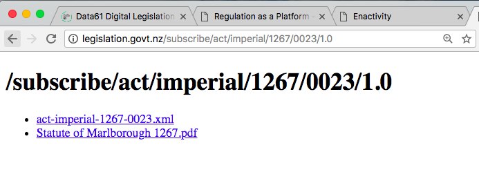
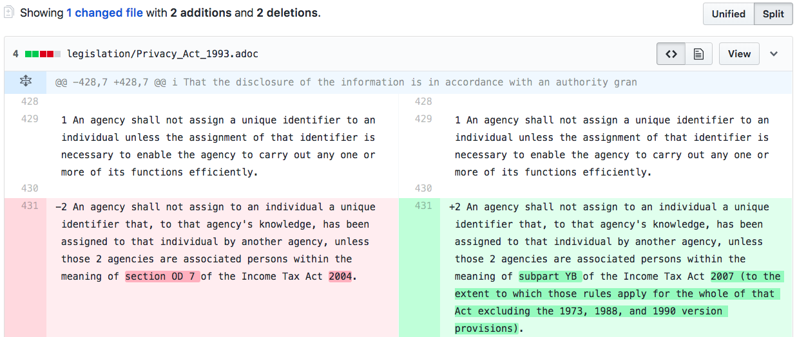

About
Law as Code
As part of the Better Rules Hackathon, we wanted to help make legislation easier to use, track, and improve.
The Goal
We wanted to build a proof-of-concept, to show that it is both feasible and beneficial to make legislation easier to work with.
The Approach
We wanted to use simple, familiar tools, to make the most of our limited time over the weekend. We chose to push our output to GitHub, a popular platform for sharing and working with code, to avoid any need to manage our own web hosting.
We chose to turn the XML law into AsciiDoc text files. AsciiDoc is a format that works well for both people and computers.
The Source
We started with raw XML files from the official legislation website.

The Outcome
We created automated tools to:
- Read legislation from the official XML source
- Transform the XML into readable .adoc files
- Upload the .adoc files to GitHub for sharing and re-use
What can our tools do?
Our proof-of-concept worked with legislation from 1993, but is already capable of working on all legislation provided through the official XML source. That includes law going all the way back to the Statute of Marlborough from 1267.

Proof-of-Concept: The Privacy Act 1993
We demonstrated our tools working with the Privacy Act 1993. This is a topical bit of law, with a Privacy Bill to update it before Parliament. Below you can see how the automated comparison in GitHub helps to see the specifics of a law change.
GitHub also makes it easy to link to a specific change - try it out!

Projects
Law to XML
The current flow and format
The Parliamentary Counsel’s Office writes New Zealand enactments, using software tools which generate XML files. Those files are packed with detailed metadata to help with print layouts. But that extra data can get in the way of open-source, automated, and collaborative approaches to working with legislation.
XML to open law on GitHub
Tracking changes online
GitHub is a tool for sharing text. Most of that text is code, but it can also work for sharing legislation. It is a familiar tool for programmers, making it easy to track changes to code over time, and to talk about what changes make sense. Those are natural advantages for legislation as well.